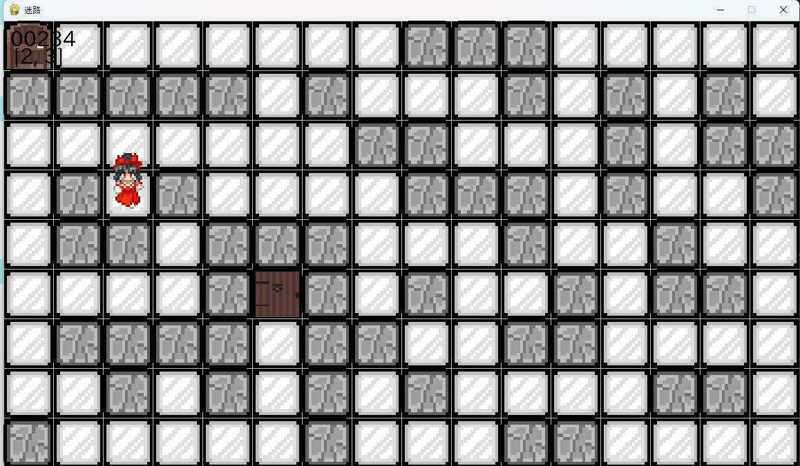
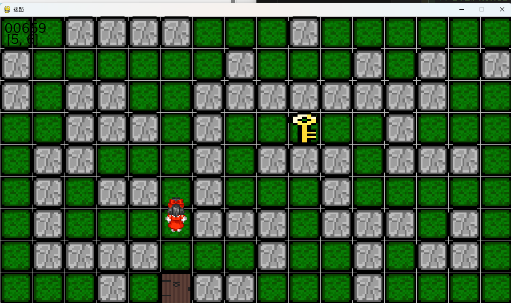
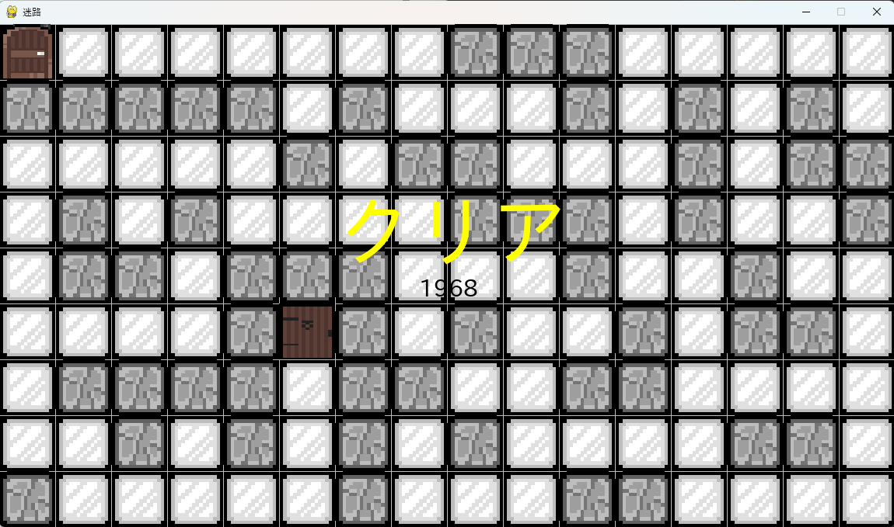
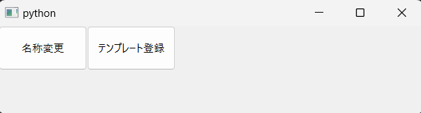
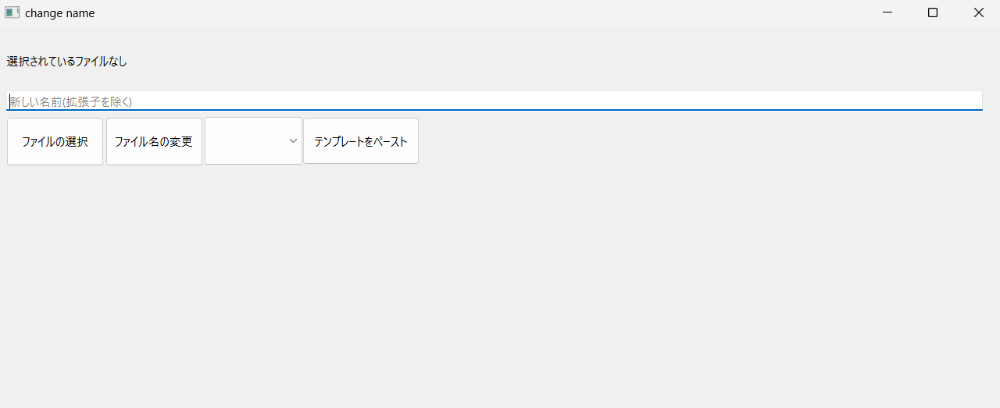
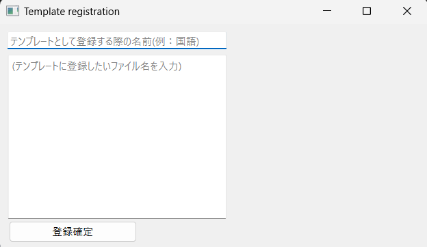
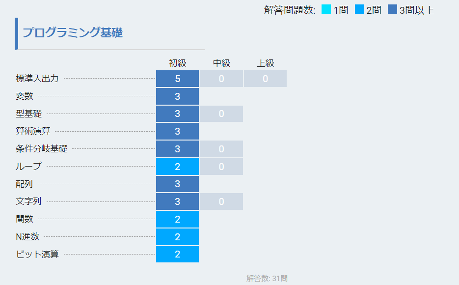
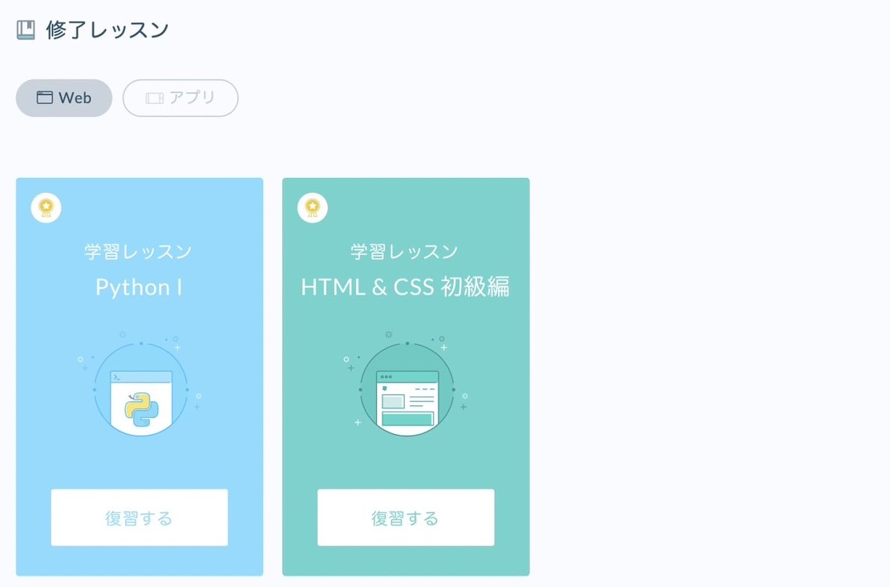

自分で単語を登録できる簡易的な単語帳を作成した。
プログラミング班とイラスト班に分けており、プログラミング班をした。
HPゲージとシーン遷移を作成した。
実際のゲームでは私の作ったものを採用したわけではない。
相手の攻撃や相手に触れると体力が減るシステムが必要だったため、
それを仮定し自キャラがオブジェクトに触れると緑のゲージが減るプログラムと
特定のキーを押すと次のシーンに移動するプログラムを作成した。
2023年12月～2024年1月
タイトル:迷路
説明文
既存の操作キャラのプログラムを改造する形でシンプルな迷路ゲームを作った。
基本的な流れとしては下のドアに入ってから別マップで鍵を取ってきて
上のドアに入ればクリアするというものである。
まず、量の多い壁の処理はブロックにIDをつけてそのIDを読み取らせる
ことでプレイヤーの動きを制限したり描画させたりしている。
比較的処理の少ない鍵やドアは1つ1つ座標を取って処理を書いている。
シーンを遷移するときは強引にすべてのアイテムの位置を変えている。



2024年2月
タイトル:名前の変更アプリ
説明文
普段、課題やレポートを提出する際、ファイルの名前が指定されているときがある。
その際一回一回指定されているにしても、最初に提出するファイル名が指定されているにしても、
名前をいちいち確認するのは手間であり、間違えてしまう可能性がある。
そのため、ファイル名を記憶させて指定したファイルの名前を変えるアプリを開発した。
Windowsの辞書に覚えさせてもいいが、それは普段PCを使うのに影響がある可能性があるため実用的かなと思う。
製作時間:約15時間
追加、改善予定
・変更したことがわかりやすいようにする
・リストの項目を消去する機能
・ウィンドウの位置とサイズをより使いやすくする



本コンテンツの作成時間（HTML/CSS/JavaScriptの設計・実装を含む）:約6時間

↑TechFul

↑progate